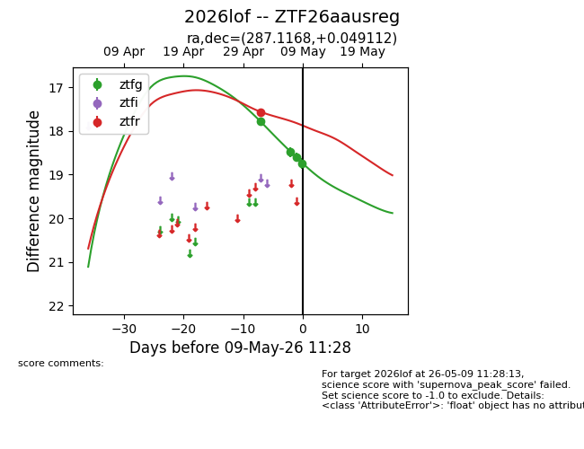
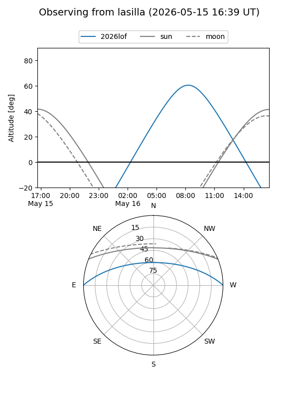
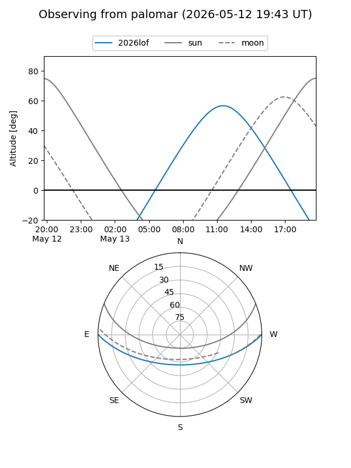
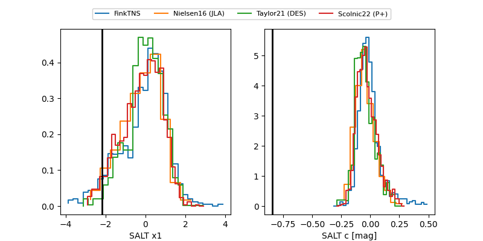

2026lof
Target 2026lof at 2026-05-09 11:29
Aliases and brokers:
FINK: link
Lasair: link
ALeRCE: link
TNS: link
YSE: link
alt names
ZTF26aausreg (ztf,fink_ztf)
2026lof (tns,yse)
Coordinates:
equatorial (ra, dec) = 287.1168,+0.04911
equatorial (HMS+DMS) = 19:08:28.03,+00:02:56.80
galactic (l, b) = (34.9198,-3.76578)
Flags:
Photometry:
last ztfg=18.74, ztfr=17.56
4 ztfg, 1 ztfr detections
Lightcurve

Visibility


Additional plots
